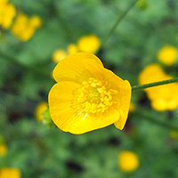
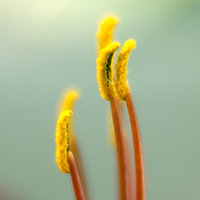
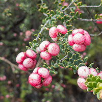
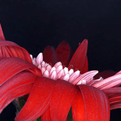
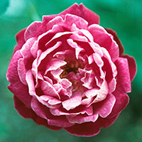
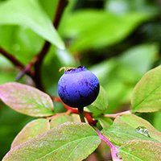
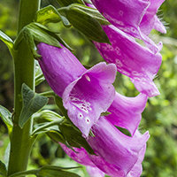
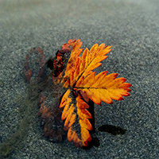
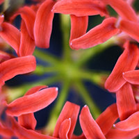
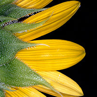

<!--#include virtual="/header.html" -->

<div id="srcset" class="container">
    <a href="img/nature/meadow_buttercup.jpg"
      data-srcset="img/nature/meadow_buttercup/meadow_buttercup_hemzhy_c_scale,w_200.jpg 200w,
        img/nature/meadow_buttercup/meadow_buttercup_hemzhy_c_scale,w_332.jpg 332w,
        img/nature/meadow_buttercup/meadow_buttercup_hemzhy_c_scale,w_442.jpg 442w,
        img/nature/meadow_buttercup/meadow_buttercup_hemzhy_c_scale,w_540.jpg 540w,
        img/nature/meadow_buttercup/meadow_buttercup_hemzhy_c_scale,w_628.jpg 628w,
        img/nature/meadow_buttercup/meadow_buttercup_hemzhy_c_scale,w_709.jpg 709w,
        img/nature/meadow_buttercup/meadow_buttercup_hemzhy_c_scale,w_783.jpg 783w,
        img/nature/meadow_buttercup/meadow_buttercup_hemzhy_c_scale,w_852.jpg 852w,
        img/nature/meadow_buttercup/meadow_buttercup_hemzhy_c_scale,w_924.jpg 924w,
        img/nature/meadow_buttercup/meadow_buttercup_hemzhy_c_scale,w_984.jpg 984w,
        img/nature/meadow_buttercup/meadow_buttercup_hemzhy_c_scale,w_1049.jpg 1049w,
        img/nature/meadow_buttercup/meadow_buttercup_hemzhy_c_scale,w_1106.jpg 1106w,
        img/nature/meadow_buttercup/meadow_buttercup_hemzhy_c_scale,w_1163.jpg 1163w,
        img/nature/meadow_buttercup/meadow_buttercup_hemzhy_c_scale,w_1218.jpg 1218w,
        img/nature/meadow_buttercup/meadow_buttercup_hemzhy_c_scale,w_1269.jpg 1269w,
        img/nature/meadow_buttercup/meadow_buttercup_hemzhy_c_scale,w_1323.jpg 1323w,
        img/nature/meadow_buttercup/meadow_buttercup_hemzhy_c_scale,w_1370.jpg 1370w,
        img/nature/meadow_buttercup/meadow_buttercup_hemzhy_c_scale,w_1397.jpg 1397w,
        img/nature/meadow_buttercup/meadow_buttercup_hemzhy_c_scale,w_1400.jpg 1400w"
      data-sizes="(max-width: 2048px) 100vw, 2048px"
      title="<h4>Meadow Buttercup <em>Ranunculus Acris</em><p>Prague Botanical Garden</p>">
      
    </a>

    <a href="img/nature/odl1.jpg"
      data-srcset="
        img/nature/odl1/odl1_qggu4u_c_scale,w_200.jpg 200w,
        img/nature/odl1/odl1_qggu4u_c_scale,w_511.jpg 511w,
        img/nature/odl1/odl1_qggu4u_c_scale,w_742.jpg 742w,
        img/nature/odl1/odl1_qggu4u_c_scale,w_909.jpg 909w,
        img/nature/odl1/odl1_qggu4u_c_scale,w_1058.jpg 1058w,
        img/nature/odl1/odl1_qggu4u_c_scale,w_1187.jpg 1187w,
        img/nature/odl1/odl1_qggu4u_c_scale,w_1293.jpg 1293w,
        img/nature/odl1/odl1_qggu4u_c_scale,w_1397.jpg 1397w,
        img/nature/odl1/odl1_qggu4u_c_scale,w_1400.jpg 1400w"
      data-sizes="(max-width: 1400px) 100vw, 1400px"
      title="<h4>Orange Daylily 1</h4><p>Austin</p>">
      
    </a>

    <a href="img/nature/pukiawe.jpg"
      data-srcset="
        img/nature/pukiawe/pukiawe_wfzafb_c_scale,w_200.jpg 200w,
        img/nature/pukiawe/pukiawe_wfzafb_c_scale,w_317.jpg 317w,
        img/nature/pukiawe/pukiawe_wfzafb_c_scale,w_417.jpg 417w,
        img/nature/pukiawe/pukiawe_wfzafb_c_scale,w_505.jpg 505w,
        img/nature/pukiawe/pukiawe_wfzafb_c_scale,w_584.jpg 584w,
        img/nature/pukiawe/pukiawe_wfzafb_c_scale,w_658.jpg 658w,
        img/nature/pukiawe/pukiawe_wfzafb_c_scale,w_729.jpg 729w,
        img/nature/pukiawe/pukiawe_wfzafb_c_scale,w_803.jpg 803w,
        img/nature/pukiawe/pukiawe_wfzafb_c_scale,w_864.jpg 864w,
        img/nature/pukiawe/pukiawe_wfzafb_c_scale,w_924.jpg 924w,
        img/nature/pukiawe/pukiawe_wfzafb_c_scale,w_988.jpg 988w,
        img/nature/pukiawe/pukiawe_wfzafb_c_scale,w_1052.jpg 1052w,
        img/nature/pukiawe/pukiawe_wfzafb_c_scale,w_1110.jpg 1110w,
        img/nature/pukiawe/pukiawe_wfzafb_c_scale,w_1164.jpg 1164w,
        img/nature/pukiawe/pukiawe_wfzafb_c_scale,w_1221.jpg 1221w,
        img/nature/pukiawe/pukiawe_wfzafb_c_scale,w_1279.jpg 1279w,
        img/nature/pukiawe/pukiawe_wfzafb_c_scale,w_1335.jpg 1335w,
        img/nature/pukiawe/pukiawe_wfzafb_c_scale,w_1380.jpg 1380w,
        img/nature/pukiawe/pukiawe_wfzafb_c_scale,w_1400.jpg 1400w"
      data-sizes="(max-width: 1400px) 100vw, 1400px"
      title="<h4>Pukiawe</h4><p>Hawaii</p>">
      
    </a>

    <a href="img/nature/gerbera.jpg"
      data-srcset="
        img/nature/gerbera/gerbera_ire7qu_c_scale,w_200.jpg 200w,
        img/nature/gerbera/gerbera_ire7qu_c_scale,w_462.jpg 462w,
        img/nature/gerbera/gerbera_ire7qu_c_scale,w_657.jpg 657w,
        img/nature/gerbera/gerbera_ire7qu_c_scale,w_815.jpg 815w,
        img/nature/gerbera/gerbera_ire7qu_c_scale,w_955.jpg 955w,
        img/nature/gerbera/gerbera_ire7qu_c_scale,w_1093.jpg 1093w,
        img/nature/gerbera/gerbera_ire7qu_c_scale,w_1223.jpg 1223w,
        img/nature/gerbera/gerbera_ire7qu_c_scale,w_1348.jpg 1348w,
        img/nature/gerbera/gerbera_ire7qu_c_scale,w_1400.jpg 1400w"
      data-sizes="(max-width: 1400px) 100vw, 1400px"
      title="<h4>Red Gerbera</h4><p>Austin</p>">
      
    </a>

    <a href="img/nature/red_rose.jpg"
      data-srcset="
        img/nature/red_rose/red_rose_xe3bju_c_scale,w_200.jpg 200w,
        img/nature/red_rose/red_rose_xe3bju_c_scale,w_385.jpg 385w,
        img/nature/red_rose/red_rose_xe3bju_c_scale,w_522.jpg 522w,
        img/nature/red_rose/red_rose_xe3bju_c_scale,w_647.jpg 647w,
        img/nature/red_rose/red_rose_xe3bju_c_scale,w_741.jpg 741w,
        img/nature/red_rose/red_rose_xe3bju_c_scale,w_820.jpg 820w,
        img/nature/red_rose/red_rose_xe3bju_c_scale,w_890.jpg 890w,
        img/nature/red_rose/red_rose_xe3bju_c_scale,w_958.jpg 958w,
        img/nature/red_rose/red_rose_xe3bju_c_scale,w_1021.jpg 1021w,
        img/nature/red_rose/red_rose_xe3bju_c_scale,w_1080.jpg 1080w,
        img/nature/red_rose/red_rose_xe3bju_c_scale,w_1137.jpg 1137w,
        img/nature/red_rose/red_rose_xe3bju_c_scale,w_1187.jpg 1187w,
        img/nature/red_rose/red_rose_xe3bju_c_scale,w_1236.jpg 1236w,
        img/nature/red_rose/red_rose_xe3bju_c_scale,w_1285.jpg 1285w,
        img/nature/red_rose/red_rose_xe3bju_c_scale,w_1328.jpg 1328w,
        img/nature/red_rose/red_rose_xe3bju_c_scale,w_1374.jpg 1374w,
        img/nature/red_rose/red_rose_xe3bju_c_scale,w_1399.jpg 1399w,
        img/nature/red_rose/red_rose_xe3bju_c_scale,w_1400.jpg 1400w"
      data-sizes="(max-width: 1400px) 100vw, 1400px"
      title="<h4>Red Rose</h4><p>Zilker Botanical Garden, Austin</p>">
      
    </a>

    <a href="img/nature/blueberry.jpg"
      data-srcset="
      img/nature/blueberry/blueberry_vqledt_c_scale,w_200.jpg 200w,
      img/nature/blueberry/blueberry_vqledt_c_scale,w_346.jpg 346w,
      img/nature/blueberry/blueberry_vqledt_c_scale,w_463.jpg 463w,
      img/nature/blueberry/blueberry_vqledt_c_scale,w_566.jpg 566w,
      img/nature/blueberry/blueberry_vqledt_c_scale,w_658.jpg 658w,
      img/nature/blueberry/blueberry_vqledt_c_scale,w_745.jpg 745w,
      img/nature/blueberry/blueberry_vqledt_c_scale,w_828.jpg 828w,
      img/nature/blueberry/blueberry_vqledt_c_scale,w_903.jpg 903w,
      img/nature/blueberry/blueberry_vqledt_c_scale,w_972.jpg 972w,
      img/nature/blueberry/blueberry_vqledt_c_scale,w_1042.jpg 1042w,
      img/nature/blueberry/blueberry_vqledt_c_scale,w_1102.jpg 1102w,
      img/nature/blueberry/blueberry_vqledt_c_scale,w_1162.jpg 1162w,
      img/nature/blueberry/blueberry_vqledt_c_scale,w_1226.jpg 1226w,
      img/nature/blueberry/blueberry_vqledt_c_scale,w_1281.jpg 1281w,
      img/nature/blueberry/blueberry_vqledt_c_scale,w_1332.jpg 1332w,
      img/nature/blueberry/blueberry_vqledt_c_scale,w_1389.jpg 1389w,
      img/nature/blueberry/blueberry_vqledt_c_scale,w_1400.jpg 1400w"
      src="blueberry_vqledt_c_scale,w_1400w.jpg"
      data-sizes="(max-width: 2048px) 100vw, 2048px"
      title="<h4>Wild Blueberry</h4><p>Denny Creek Trail near Seattle</p>">
      
    </a>

    <a href="img/nature/foxglove.jpg"
      data-srcset="
        img/nature/foxglove/foxglove_gyo350_c_scale,w_200.jpg 200w,
        img/nature/foxglove/foxglove_gyo350_c_scale,w_334.jpg 334w,
        img/nature/foxglove/foxglove_gyo350_c_scale,w_444.jpg 444w,
        img/nature/foxglove/foxglove_gyo350_c_scale,w_538.jpg 538w,
        img/nature/foxglove/foxglove_gyo350_c_scale,w_624.jpg 624w,
        img/nature/foxglove/foxglove_gyo350_c_scale,w_708.jpg 708w,
        img/nature/foxglove/foxglove_gyo350_c_scale,w_782.jpg 782w,
        img/nature/foxglove/foxglove_gyo350_c_scale,w_851.jpg 851w,
        img/nature/foxglove/foxglove_gyo350_c_scale,w_923.jpg 923w,
        img/nature/foxglove/foxglove_gyo350_c_scale,w_985.jpg 985w,
        img/nature/foxglove/foxglove_gyo350_c_scale,w_1040.jpg 1040w,
        img/nature/foxglove/foxglove_gyo350_c_scale,w_1104.jpg 1104w,
        img/nature/foxglove/foxglove_gyo350_c_scale,w_1158.jpg 1158w,
        img/nature/foxglove/foxglove_gyo350_c_scale,w_1211.jpg 1211w,
        img/nature/foxglove/foxglove_gyo350_c_scale,w_1262.jpg 1262w,
        img/nature/foxglove/foxglove_gyo350_c_scale,w_1317.jpg 1317w,
        img/nature/foxglove/foxglove_gyo350_c_scale,w_1365.jpg 1365w,
        img/nature/foxglove/foxglove_gyo350_c_scale,w_1398.jpg 1398w,
        img/nature/foxglove/foxglove_gyo350_c_scale,w_1400.jpg 1400w"
      data-sizes="(max-width: 1400px) 100vw, 1400px"
      title="<h4>Foxglove</h4><p>Seattle</p>">
      
    </a>

    <a href="img/nature/orange_leaf.jpg"
      data-srcset="
        img/nature/orange_leaf/orange_leaf_leespl_c_scale,w_200.jpg 200w,
        img/nature/orange_leaf/orange_leaf_leespl_c_scale,w_339.jpg 339w,
        img/nature/orange_leaf/orange_leaf_leespl_c_scale,w_449.jpg 449w,
        img/nature/orange_leaf/orange_leaf_leespl_c_scale,w_544.jpg 544w,
        img/nature/orange_leaf/orange_leaf_leespl_c_scale,w_631.jpg 631w,
        img/nature/orange_leaf/orange_leaf_leespl_c_scale,w_708.jpg 708w,
        img/nature/orange_leaf/orange_leaf_leespl_c_scale,w_781.jpg 781w,
        img/nature/orange_leaf/orange_leaf_leespl_c_scale,w_845.jpg 845w,
        img/nature/orange_leaf/orange_leaf_leespl_c_scale,w_914.jpg 914w,
        img/nature/orange_leaf/orange_leaf_leespl_c_scale,w_969.jpg 969w,
        img/nature/orange_leaf/orange_leaf_leespl_c_scale,w_1035.jpg 1035w,
        img/nature/orange_leaf/orange_leaf_leespl_c_scale,w_1089.jpg 1089w,
        img/nature/orange_leaf/orange_leaf_leespl_c_scale,w_1141.jpg 1141w,
        img/nature/orange_leaf/orange_leaf_leespl_c_scale,w_1196.jpg 1196w,
        img/nature/orange_leaf/orange_leaf_leespl_c_scale,w_1246.jpg 1246w,
        img/nature/orange_leaf/orange_leaf_leespl_c_scale,w_1296.jpg 1296w,
        img/nature/orange_leaf/orange_leaf_leespl_c_scale,w_1343.jpg 1343w,
        img/nature/orange_leaf/orange_leaf_leespl_c_scale,w_1387.jpg 1387w,
        img/nature/orange_leaf/orange_leaf_leespl_c_scale,w_1395.jpg 1395w,
        img/nature/orange_leaf/orange_leaf_leespl_c_scale,w_1400.jpg 1400w"
      data-sizes="(max-width: 1400px) 100vw, 1400px"
      title="<h4>Orange Leaf</h4><p>Iron Springs Resort, Washington</p>">
      
    </a>

    <a href="img/nature/palm_trunks.jpg"
      data-srcset="
        img/nature/palm_trunks/palm_trunks_i7b7al_c_scale,w_200.jpg 200w,
        img/nature/palm_trunks/palm_trunks_i7b7al_c_scale,w_358.jpg 358w,
        img/nature/palm_trunks/palm_trunks_i7b7al_c_scale,w_482.jpg 482w,
        img/nature/palm_trunks/palm_trunks_i7b7al_c_scale,w_589.jpg 589w,
        img/nature/palm_trunks/palm_trunks_i7b7al_c_scale,w_689.jpg 689w,
        img/nature/palm_trunks/palm_trunks_i7b7al_c_scale,w_776.jpg 776w,
        img/nature/palm_trunks/palm_trunks_i7b7al_c_scale,w_861.jpg 861w,
        img/nature/palm_trunks/palm_trunks_i7b7al_c_scale,w_928.jpg 928w,
        img/nature/palm_trunks/palm_trunks_i7b7al_c_scale,w_998.jpg 998w,
        img/nature/palm_trunks/palm_trunks_i7b7al_c_scale,w_1067.jpg 1067w,
        img/nature/palm_trunks/palm_trunks_i7b7al_c_scale,w_1136.jpg 1136w,
        img/nature/palm_trunks/palm_trunks_i7b7al_c_scale,w_1194.jpg 1194w,
        img/nature/palm_trunks/palm_trunks_i7b7al_c_scale,w_1254.jpg 1254w,
        img/nature/palm_trunks/palm_trunks_i7b7al_c_scale,w_1311.jpg 1311w,
        img/nature/palm_trunks/palm_trunks_i7b7al_c_scale,w_1367.jpg 1367w,
        img/nature/palm_trunks/palm_trunks_i7b7al_c_scale,w_1398.jpg 1398w,
        img/nature/palm_trunks/palm_trunks_i7b7al_c_scale,w_1400.jpg 1400w"
      data-sizes="(max-width: 1400px) 100vw, 1400px"
      title="<h4>Palm Trunks</h4><p>Joshua Tree National Park, California</p>">
      
    </a>

    <a href="img/nature/spider_lily.jpg"
      data-srcset="
        img/nature/spider_lily/spider_lily_ymfl1u_c_scale,w_200.jpg 200w,
        img/nature/spider_lily/spider_lily_ymfl1u_c_scale,w_372.jpg 372w,
        img/nature/spider_lily/spider_lily_ymfl1u_c_scale,w_512.jpg 512w,
        img/nature/spider_lily/spider_lily_ymfl1u_c_scale,w_625.jpg 625w,
        img/nature/spider_lily/spider_lily_ymfl1u_c_scale,w_750.jpg 750w,
        img/nature/spider_lily/spider_lily_ymfl1u_c_scale,w_847.jpg 847w,
        img/nature/spider_lily/spider_lily_ymfl1u_c_scale,w_945.jpg 945w,
        img/nature/spider_lily/spider_lily_ymfl1u_c_scale,w_1040.jpg 1040w,
        img/nature/spider_lily/spider_lily_ymfl1u_c_scale,w_1125.jpg 1125w,
        img/nature/spider_lily/spider_lily_ymfl1u_c_scale,w_1206.jpg 1206w,
        img/nature/spider_lily/spider_lily_ymfl1u_c_scale,w_1287.jpg 1287w,
        img/nature/spider_lily/spider_lily_ymfl1u_c_scale,w_1357.jpg 1357w,
        img/nature/spider_lily/spider_lily_ymfl1u_c_scale,w_1400.jpg 1400w"
      data-sizes="(max-width: 1400px) 100vw, 1400px"
      title="<h4>Red Spider Lily <em>Lycoris Radiata</em></h4><p>Austin</p>">
      
    </a>

    <a href="img/nature/sunflower.jpg"
      data-srcset="
        img/nature/sunflower/sunflower_alotoc_c_scale,w_200.jpg 200w,
        img/nature/sunflower/sunflower_alotoc_c_scale,w_332.jpg 332w,
        img/nature/sunflower/sunflower_alotoc_c_scale,w_435.jpg 435w,
        img/nature/sunflower/sunflower_alotoc_c_scale,w_524.jpg 524w,
        img/nature/sunflower/sunflower_alotoc_c_scale,w_606.jpg 606w,
        img/nature/sunflower/sunflower_alotoc_c_scale,w_677.jpg 677w,
        img/nature/sunflower/sunflower_alotoc_c_scale,w_750.jpg 750w,
        img/nature/sunflower/sunflower_alotoc_c_scale,w_813.jpg 813w,
        img/nature/sunflower/sunflower_alotoc_c_scale,w_875.jpg 875w,
        img/nature/sunflower/sunflower_alotoc_c_scale,w_937.jpg 937w,
        img/nature/sunflower/sunflower_alotoc_c_scale,w_996.jpg 996w,
        img/nature/sunflower/sunflower_alotoc_c_scale,w_1050.jpg 1050w,
        img/nature/sunflower/sunflower_alotoc_c_scale,w_1104.jpg 1104w,
        img/nature/sunflower/sunflower_alotoc_c_scale,w_1163.jpg 1163w,
        img/nature/sunflower/sunflower_alotoc_c_scale,w_1217.jpg 1217w,
        img/nature/sunflower/sunflower_alotoc_c_scale,w_1266.jpg 1266w,
        img/nature/sunflower/sunflower_alotoc_c_scale,w_1319.jpg 1319w,
        img/nature/sunflower/sunflower_alotoc_c_scale,w_1369.jpg 1369w,
        img/nature/sunflower/sunflower_alotoc_c_scale,w_1391.jpg 1391w,
        img/nature/sunflower/sunflower_alotoc_c_scale,w_1400.jpg 1400w"
      data-sizes="(max-width: 1400px) 100vw, 1400px"
      title="<h4>Sunflower Profile</h4><p>Austin</p>">
      
    </a>

    <a href="img/nature/three_peppers.jpg"
      data-srcset="
        img/nature/three_peppers/three_peppers_e8ylyb_c_scale,w_200.jpg 200w,
        img/nature/three_peppers/three_peppers_e8ylyb_c_scale,w_425.jpg 425w,
        img/nature/three_peppers/three_peppers_e8ylyb_c_scale,w_592.jpg 592w,
        img/nature/three_peppers/three_peppers_e8ylyb_c_scale,w_746.jpg 746w,
        img/nature/three_peppers/three_peppers_e8ylyb_c_scale,w_879.jpg 879w,
        img/nature/three_peppers/three_peppers_e8ylyb_c_scale,w_1004.jpg 1004w,
        img/nature/three_peppers/three_peppers_e8ylyb_c_scale,w_1159.jpg 1159w,
        img/nature/three_peppers/three_peppers_e8ylyb_c_scale,w_1280.jpg 1280w"
      data-sizes="(max-width: 1280px) 100vw, 1280px"
      title="<h4>Three Cayenne Peppers</h4><p>Austin</p>">
      
    </a>
</div>

<!--#include virtual="/footer.html" -->
